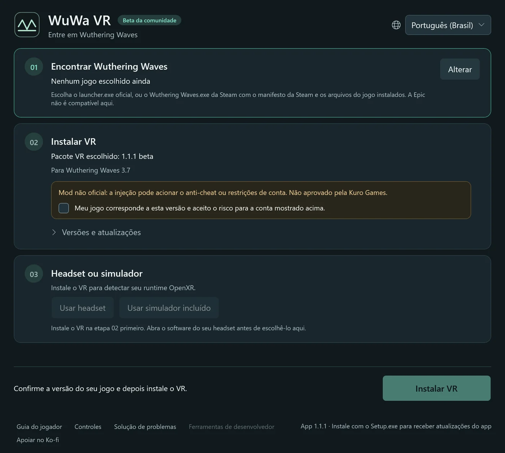
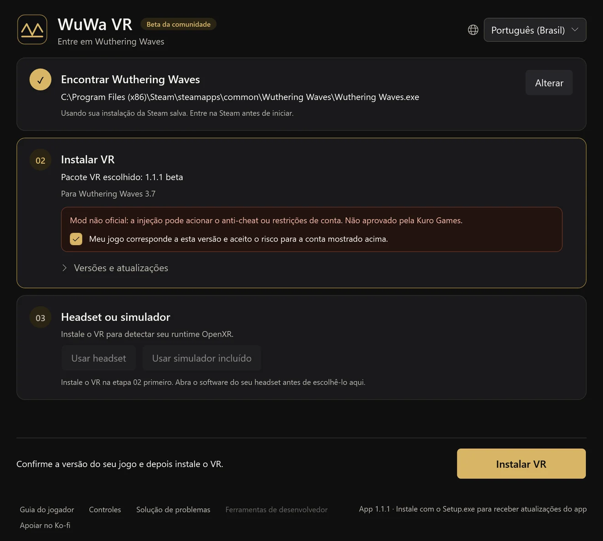
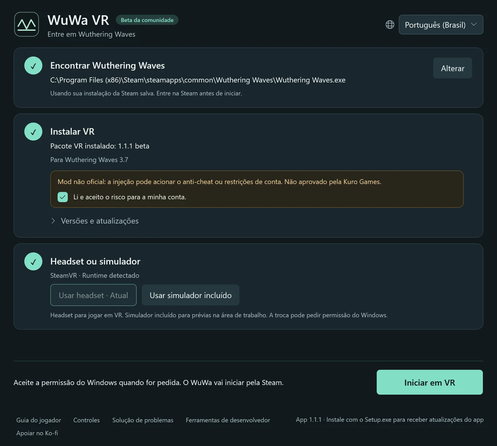

Beta da comunidade1.1.2 · Wuthering Waves 3.7
Entre em Wuthering Waves
Um mod de VR gratuito, feito por fãs, para Windows. Ande por Solaris-3 em escala real com rastreamento de cabeça, corpo em primeira pessoa e atalhos no controle. Baseado no UEVR de praydog.
Instale e siga três passos
Execute o WuWa-VR-Setup.exe e abra o WuWa VR; o launcher guia você no resto. A primeira instalação baixa o mod de VR e não é preciso Python nem outras ferramentas.
Encontrar Wuthering Waves
Escolha sua cópia do jogo na Steam ou no launcher oficial da Kuro. A escolha fica salva. A Epic ainda não é compatível.
Instalar VR
Leia o aviso de risco para a conta, confirme a versão do jogo e instale. As atualizações mantêm suas configurações e backups.
Headset ou simulador
Abra o software do seu headset ou escolha o simulador incluído. Depois clique em Iniciar em VR e aceite a permissão do Windows.






Telas reais do launcher, geradas pelo app em português. Seus caminhos e seu runtime serão diferentes.
No jogo, L3 + R3 abre as configurações do UEVR. As opções do WuWa ficam em VR → WuWa Controls. Guia completo de instalação, atualização e recuperação (em inglês)
Feito para jogar, não só para olhar
VR estéreo e rastreamento de cabeça
Profundidade real em headsets OpenXR. Menus e HUD continuam usáveis, e dá para mover, redimensionar ou esconder a interface.
Feito para controle
Atalhos para Xbox e, de forma experimental, PlayStation, com uma folha de atalhos dentro da VR em L3 + Menu.
Corpo em primeira pessoa
Veja as mãos e a roupa do seu personagem com a cabeça oculta. Acompanhamento da animação opcional, com modo de conforto.
Câmeras livres
Visões de câmera livre, drone, avião e acrobacias para explorar e tirar capturas. Experimental.
Janela 6DOF
Um modo de janela opcional que coloca o jogo no seu quarto. Adaptado do trabalho de Elliott Tate.
Os dois olhos combinam
Árvores distantes, objetos e luz indireta combinam em cada olho, e o mundo parece uma cena só.
Primeira pessoa, até a animação parada
Olhe para baixo e lá está seu personagem: mãos, roupa e animações paradas em escala real. Esconda os ossos da cabeça e mantenha o corpo, ou siga a animação completa para uma visão mais viva.
Grave seus próprios clipes em alta resolução (em inglês)Passo a passo: primeira pessoa, imagem limpa e o gravador integrado.Atalhos do controle
Quase todos os atalhos são L3 mais um botão: mantenha o analógico esquerdo pressionado, aperte o botão e solte tudo. Na VR, L3 + Menu mostra a mesma lista como uma folha.

- LTPortal ligar / desligar
- LBAlternar modo HUD / mouse
- ViewPrimeira pessoa ligar / desligar
- Direcional ↓Primeira pessoa: alternar animação
- RTDiorama ligar / desligar (10x)
- RBCâmera normal / fixa
- MenuMostrar / ocultar guia
- Y/XPrimeira / fixa: altura
- BMostrar / ocultar interface
- ARecentrar visão / portal
- R3Abrir / fechar ajustes UEVR
Gestos
- R3×2Câmera livre ligar / desligar
- L3×2Captura de tela do Windows
- LT+RT→L3Tela estéreo ligar / desligar
- LT+RT→R3Teatro mono ligar / desligar (sem profundidade estéreo)
chronohaxx.github.io/wuwa-vr
O suporte a PlayStation é experimental.
Todos os atalhos
DIA A DIA
| L3+B | Mostrar / ocultar interface |
|---|---|
| L3+A | Recentrar visão / portal |
| L3+R3 | Abrir / fechar ajustes UEVR |
| L3+Menu | Mostrar / ocultar guia |
| L3+View | Primeira pessoa ligar / desligar |
| L3+RB | Câmera normal / fixa |
| L3+LB | Alternar modo HUD / mouse |
| R3×2 | Câmera livre ligar / desligar |
| L3×2 | Captura de tela do Windows |
CÂMERAS
| L3+LT | Portal ligar / desligar |
|---|---|
| L3+RT | Diorama ligar / desligar (10x) |
| LT+RT→L3 | Tela estéreo ligar / desligar |
| LT+RT→R3 | Teatro mono ligar / desligar (sem profundidade estéreo) |
| L3+Y/X | Primeira / fixa: altura |
| LB+LT/RT | Fixa: afastar / aproximar |
| L3+direcional para baixo | Primeira pessoa: alternar animação |
| Segure RB | Velocidade máxima com Polar walk ativo |
| Com a câmera livre ativa R3×2 | |
| Analógico esquerdo / direito | Câmera livre: mover / olhar |
| LT/LB | Câmera livre: subir / descer |
| RT / dois toques em RT | Câmera livre: impulso / turbo |
MENUS E HUD
| L3+direcional esquerda / direita | Folha de atalhos: página anterior / seguinte |
|---|---|
| L3+direcional para cima | Folha de atalhos: página automática |
| LB+R3 | V uma vez; segure 0,8 s para a roda Tab |
| Com o modo HUD / mouse ativo L3+LB | |
| Analógico esquerdo | Mover cursor |
| A/B | Clicar / voltar |
| X+analógico esquerdo | Rolar |
| Direcional | Mover mapa |
| LT/RT | HUD mais perto / longe |
| LB/RB | HUD baixo / cima |
AJUSTES UEVR
| Com as configurações do UEVR abertas L3+R3 | |
|---|---|
| Direcional / A / B | Navegar / ativar / voltar |
| LB/RB | Trocar página lateral |
| Analógico esquerdo (solte RT) | Rolar painel em foco |
| RT+analógico esq. / dir. | Câmera frente/lado / altura |
| RT+direcional esq. / dir. | Escolher página de atalhos RT |
Perguntas
Quais headsets funcionam?
O WuWa VR usa OpenXR. Foi jogado em um Quest Pro via SteamVR; outros headsets OpenXR devem funcionar, mas ainda não foram verificados. O simulador incluído permite testar em uma tela comum.
Steam, launcher da Kuro ou Epic?
A Steam e o launcher oficial da Kuro são compatíveis. A Epic ainda não.
Minha conta pode ser restringida?
Sim, é possível. O mod é injetado no jogo e o anti-cheat pode detectá-lo. A Kuro Games não o aprovou. Leia o aviso de risco antes de instalar.
O Windows avisa sobre o instalador. É normal?
O instalador não tem assinatura de código, então o SmartScreen pode avisar. Baixe somente da versão no GitHub do projeto e compare o checksum SHA-256. Nunca desative o antivírus nem o anti-cheat.
Como funcionam as atualizações?
O app procura as próprias atualizações e pergunta antes de reiniciar. Os pacotes de VR são atualizados à parte no passo 02, e você pode voltar a uma versão instalada anterior.
Ele altera os arquivos do jogo?
Não. O launcher não mexe nos arquivos do jogo; o mod de VR é injetado ao iniciar.
Como desinstalo?
Use Solução de problemas → Preparar desinstalação no app e depois remova o WuWa VR em Configurações do Windows → Aplicativos. Configurações, backups e gravações ficam guardados, a menos que você os apague.
É grátis?
Sim. É um projeto de fãs gratuito e o launcher é código aberto com licença MIT. O apoio no Ko-fi é opcional e não compra nenhuma garantia.
Limitações conhecidas
- A inicialização pela Steam ainda falha em alguns PCs; há uma correção em teste. O caminho pelo launcher oficial da Kuro é o mais testado.
- Alguns carregamentos de cenas e diálogos podem travar, e menus planos podem mostrar um fundo em movimento.
- A atualização da proporção do HUD não é confiável; parte da iluminação de NPCs, reflexos e névoa ainda precisa de testes.
- A troca automática para cinemáticas é experimental e vem desligada; ainda não foi testada com um vídeo pré-renderizado.
Código aberto e downloads verificáveis
O launcher para desktop é código aberto com licença MIT e nossas mudanças no mod são públicas. Cada versão traz o código correspondente e checksums SHA-256.
Os relatórios do VirusTotal ainda não foram verificados para esta versão. Nenhuma análise limpa ou certificação de segurança é declarada.
Ajude a melhorar
Escreva no idioma que preferir. Prepare o rascunho, revise no GitHub e envie você mesmo. O site nunca publica automaticamente. Enviar no GitHub exige login; copiar o rascunho não exige conta.
O repositório público ainda não está conectado. Você pode copiar o rascunho; ele não foi enviado.
Seu rascunho — revise antes de compartilhar
Feito sobre o trabalho da comunidade
O WuWa VR se apoia no trabalho de praydog e dos colaboradores do UEVR, mirudo2, polar, SannpoKun, Indath, endlessfalls e Elliott Tate.